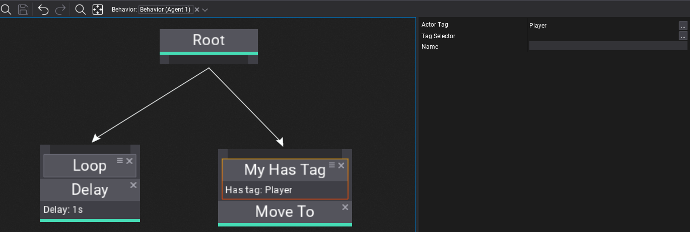

HOWTO: Create a custom Behavior Tree decorator

Behavior Trees are very extensible meaning you can create own node types in your game project or use the ones from engine and plugins. Each node can define custom logic, contain properties and store runtime state (per-instance).
Warning
Please keep in mind that Behavior execution is done in async via Job System (Behavior.System).
Custom decorator node
Below is an example of a custom decorator that checks if a specific gameplay conditions are met. This showcase how Behavior Tree can interact with gameplay code.
using FlaxEngine;
/// <summary>
/// Simple node decorator.
/// </summary>
public class MyHasTagDecorator : BehaviorTreeDecorator
{
/// <summary>
/// Checks if behavior agent running this BT has a specific actor tag assigned. Used only if TagSelector is unused.
/// </summary>
public Tag ActorTag;
/// <summary>
/// Checks if behavior agent running this BT has a specific actor tag assigned. If set Tag is unused.
/// </summary>
public BehaviorKnowledgeSelector<Tag> TagSelector;
/// <inheritdoc />
public override bool CanUpdate(BehaviorUpdateContext context)
{
if (!TagSelector.TryGet(context.Knowledge, out var tag))
tag = ActorTag;
var agent = context.Behavior.Actor;
// Here you can interact with level or gameplay objects (be aware that this code runs in async by default)
return agent.HasTag(tag);
}
#if FLAX_EDITOR
/// <inheritdoc />
public override string GetDebugInfo(BehaviorUpdateContext context)
{
if (!TagSelector.TryGet(context.Knowledge, out var tag))
tag = ActorTag;
return string.Format("Has tag: {0}", tag);
}
#endif
}